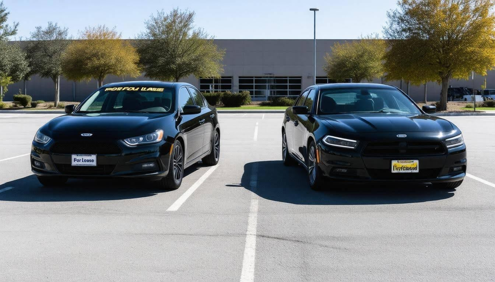
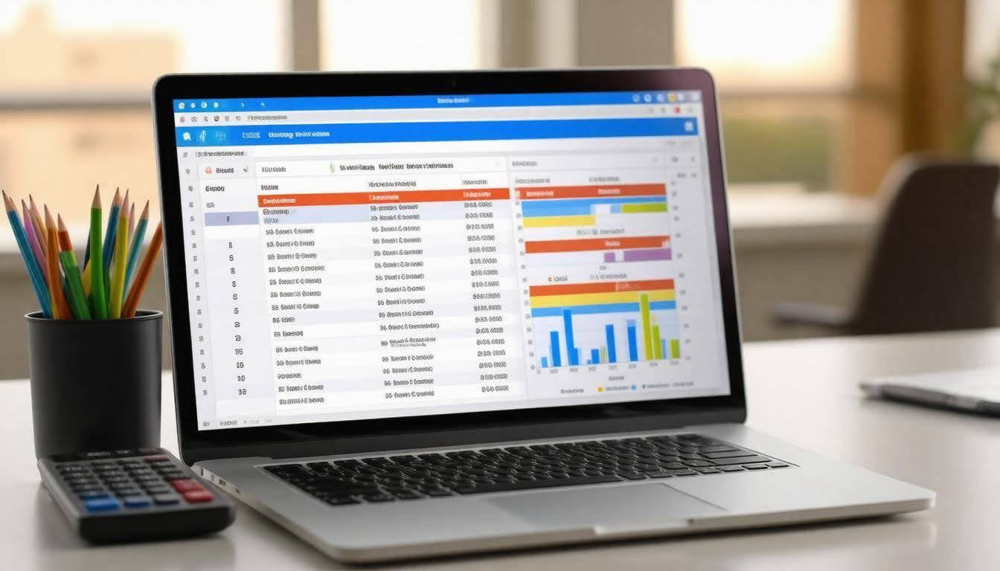
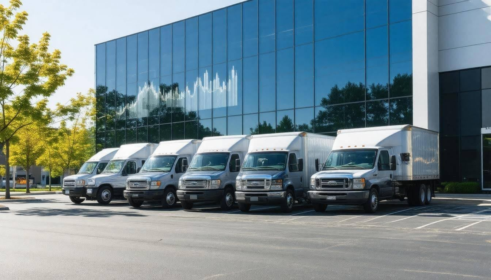
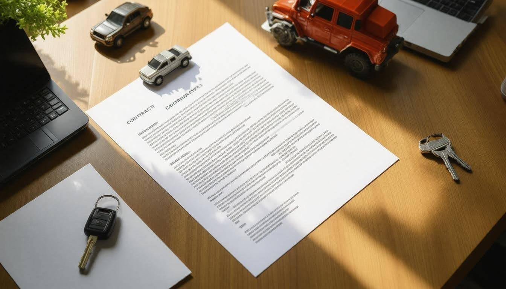

Understanding the Differences Between Leasing and Buying Fleet Vehicles A Detailed Comparison
When it comes to managing a fleet of vehicles for your business, the decision between leasing and buying can feel overwhelming. You might wonder which option is more cost-effective, offers greater flexibility, or requires less hassle in the long run. It's not just about choosing vehicles; it's about crafting a strategy that aligns with your company's needs. This choice can influence everything from your budget to your team's daily operations. In this article, we’ll break down the key differences to help you make an informed decision that suits your unique situation. Let's dive into what makes leasing and buying fleet vehicles so distinct, and how each path can impact your bottom line.
The main differences between leasing and buying fleet vehicles include upfront costs, financial commitments, and maintenance responsibilities. Leasing typically involves lower initial payments and often bundles maintenance services, allowing companies to frequently upgrade to newer models, while buying requires a significant capital investment, offers long-term equity, but comes with higher maintenance costs as the vehicle ages.
Overview of Leasing vs Buying Fleet Vehicles
When it comes to managing a fleet, the choice between leasing and buying can significantly impact a company's bottom line. Leasing is often viewed as a more flexible option. With lower upfront costs—typically only requiring a down payment of around 10% or less—leasing allows companies to acquire vehicles without the burden of full ownership. This approach enables businesses to upgrade their fleets frequently, keeping them modern and efficient.
For example, frequent upgrades mean that employees have access to newer technology, improving both safety and productivity on the road.
Leasing often includes additional benefits like maintenance packages, reducing the headaches typically associated with owning vehicles. As a lessee, you’re shielded from surprise repair expenses since warranties usually cover maintenance during the lease period.
On the flip side, buying fleet vehicles means committing a larger initial investment usually ranging from 20% to 30% of the vehicle's purchase price. While this may seem daunting, ownership comes with advantages, such as building equity over time and having full control over the vehicle’s usage without restrictions dictated by lease terms. This can be especially appealing for businesses that want to customize vehicles for specific needs or maintain long-term assets within their operations.
Key Financial Considerations
According to a 2023 survey by the Fleet Management Association, approximately 65% of small to medium-sized enterprises preferred leasing for its flexibility while 70% of large corporations leaned toward purchasing due to perceived long-term cost savings.
One major factor to consider is depreciation. Vehicles lose value over time; in fact, a car that costs $30,000 initially might depreciate to about $15,000 after five years. In leasing situations, depreciation costs are usually factored into monthly payments, allowing lessees not to worry about selling an aging vehicle later on. This can alleviate logistical challenges as well—leasing agreements often allow for hassle-free returns once the term ends.
Notably, with purchase agreements, owners benefit from tax-deductible depreciation over time via methods like the Modified Accelerated Cost Recovery System (MACRS). This means buying isn’t just about immediate outlay; there are long-term financial implications worth factoring in.
With a clear understanding of how each option affects financial considerations and long-term values, we now turn our attention to the essential aspects of cost management and payment strategies in fleet decision-making.
Analyzing Costs and Payments
Understanding costs related to leasing versus buying fleet vehicles goes beyond just looking at monthly payments. When assessing these options, it's essential to examine immediate expenses and the long-term implications of each choice. One key factor is that leasing typically translates to lower monthly payments, enabling businesses to allocate resources more efficiently elsewhere. For example, if a company decides to lease instead of purchase, they might end up paying around $400 per month for each vehicle, whereas purchasing with a financing plan could push that payment to about $700.
This difference can provide valuable insight into cash flow management:
Leasing allows for a lesser initial investment and gives companies the freedom to channel funds towards growth opportunities.
Buying, while it builds equity in the long term, requires a more substantial upfront capital outlay and can strain an operating budget.
Now let's discuss the cost breakdown further. The following table illustrates some pivotal financial differences between leasing and buying:
| Leasing | Buying |
|---|---|
| Lower monthly payments | Higher monthly payments |
| Limited maintenance costs | Full responsibility for maintenance |
| End-of-term fees | Resale value recovery|
| No equity build-up | Equity in vehicle ownership
Each pathway has challenges and advantages tied to them. The leasing model often covers basic maintenance within its contract, allowing businesses to avoid surprise costs associated with repairs. In contrast, ownership means shouldering all associated upkeep expenses without any predictable budget. Understanding these nuances is essential when determining how they fit your company’s unique demands.
Additionally, it’s vital to consider how the leasing structure affects asset management over time. Leasing agreements usually have fixed terms lasting from two to five years, after which you typically return the vehicle or opt for new models. This feature can benefit organizations needing flexibility as their vehicle needs change. By contrast, vehicle ownership demands continuous management of the asset's lifecycle, including diligent maintenance and potential resale once the vehicle no longer meets operational needs.
It's also important to recognize that when purchasing a fleet vehicle, businesses gain a significant advantage: they can recover value through resale once they decide it's time to retire an asset from their roster. This aspect not only opens doors for financial recovery later but also paves the way for developing more defined budgeting strategies over time as we explore the next critical facets of vehicle acquisition decisions.
Investment, Resale Value, and Ownership Benefits
When a company decides to purchase vehicles for its fleet, it’s not just spending money upfront; it’s making a substantial investment that can pay off long-term. Each vehicle becomes a tangible asset on the balance sheet, which can be depreciated over time, providing valuable tax deductions.
This depreciation occurs in a predictable pattern: vehicles generally lose about 20-30% of their value in the first year alone but then gradually depreciate at a slower rate. For example, a $30,000 vehicle might sell for only $21,000 after one year but could still have a resale value of around $15,000 after three years. Thus, understanding how depreciation works is critical because it reflects an asset's lifecycle and potential return on investment.
Beyond just the numbers, ownership of fleet vehicles comes with unique perks that can influence operational decisions.
Ownership Perks
One of the most compelling aspects of owning fleet vehicles lies in the financial benefits. Companies can enjoy significant tax savings through deductions related to depreciation and interest paid on any financing. Instead of merely paying for vehicle usage like in leasing, ownership translates to accumulating equity as each payment reduces the loan balance.
Over time, these deductions can significantly offset costs. If you purchase a qualifying vehicle under Section 179, for instance, you might be able to deduct up to $25,000, further easing the financial burden associated with vehicle ownership.
However, the challenges of depreciation highlight the need for careful management regarding the overall condition and resale potential of these assets. A properly maintained vehicle can help maximize resale value when it’s time for replacement or upgrading.
Additionally, maximizing your investment involves considering not just how much you’ll get back when selling but also how well you maintain these vehicles over their lifespan.
Resale Value Considerations
The resale value of purchased fleet vehicles hinges significantly on their maintenance history and overall condition. Vehicles that are well-maintained are more likely to fetch higher prices during resale compared to those that show signs of neglect. Regular maintenance helps keep each vehicle functioning smoothly while also preventing issues that could lead to dramatic declines in value when it's sold.
This makes it essential for companies to establish consistent maintenance schedules where routine inspections and repairs are prioritized.
Keeping accurate records of all service and repairs not only aids in maintaining vehicles but also strengthens resale arguments by demonstrating due diligence about care and upkeep to potential buyers.
Understanding ownership benefits tied to investment and resale is invaluable as it positions companies not only to save money long-term but also to enhance their operational efficiency within competitive markets.
As we explore further, the focus shifts to critical elements that affect both performance and cost throughout a vehicle's life cycle.
Maintenance, Depreciation, and Longevity
One of the most significant aspects that fleet managers consider is how maintenance influences their operational success. Leasing typically simplifies this facet, as many leasing agreements come with routine servicing built into the contract. This means that companies can budget with clarity since these expenses are often consistent and predictable, effectively reducing unexpected costs. For instance, when a vehicle leased comes in for regular service, the leasing partner usually covers the bill, allowing companies to operate smoothly without worrying about sudden repair expenses.
Leasing: Regular servicing often included, reducing unexpected expenses.
Buying: Full responsibility for all repairs and maintenance, potentially leading to higher costs over time.
Conversely, when buying a fleet vehicle, the entire burden of maintenance falls on the owner. This includes everything from oil changes to brake replacements, and more extensive repairs might be necessary for older vehicles. Notably, these costs don't remain static; a study by MarketWatch in 2022 revealed that maintenance costs for owned fleet vehicles could rise by 15% annually as vehicles age. Companies must factor in these increasing expenses and the need for robust maintenance schedules if they choose ownership over leasing.
The unforeseen expenses associated with maintaining older vehicles can quickly add up, taking a toll on profit margins.
In terms of depreciation, it’s crucial to understand that leased vehicles typically depreciate at a slower rate than those owned outright. Leased vehicles are usually returned at the end of the lease period—typically two to three years—which means you avoid the logistical challenges of selling a depreciated unit. When purchased outright, owners bear the responsibility for managing depreciation and its financial implications directly; they must absorb the loss of value over time and strategize on how or when to resell these assets.
Longevity Considerations
The longevity of fleet vehicles also varies significantly based on whether they are leased or purchased. Generally speaking, if a vehicle is purchased, it will likely be used longer—often spanning 8 to 10 years—providing some equity return with each payment made. However, this extended use can lead to increased wear-and-tear, which affects reliability over time. In contrast, leased vehicles tend to be cycled out frequently—between three to five years—ensuring that companies benefit from lower depreciation rates and have access to newer models with the latest technological advancements.
In this context of maintenance and longevity, fleet operators need to weigh their options carefully. The flexibility offered through leasing aligns well with rapidly changing technology requirements and customer expectations while ownership may provide long-term benefits in certain circumstances. Making an informed decision hinges on understanding how each option will affect overall operational efficiency and budgetary constraints down the road.
While maintenance heavily influences operational costs, factors such as adaptability in agreements and contractual details also significantly impact decisions regarding fleet management.
Flexibility and Contract Terms
When it comes to fleet management, the flexibility that leasing offers can be a game-changer. Companies often find themselves needing to adjust operations based on market demands, which is where leasing shines. Typical lease agreements range from two to five years, providing a relatively short commitment. This duration allows businesses to regularly reassess their vehicle needs and make adjustments without the burden of long-term ownership.
Statistically, many companies opt for leases because they facilitate easier transitions from older vehicles to newer models with the latest technology, essentially keeping the fleet modern and efficient. For instance, when faced with a sudden influx of orders or changing logistics needs, that flexibility in leasing becomes imperative. By using leased vehicles, businesses can scale up or down more easily than if they committed to purchasing a large fleet.
However, it's essential to note that lease agreements come with specific contract terms dictating use. Mileage limits are often set between 10,000 and 15,000 miles per year. Businesses with high travel needs should consider these limitations carefully; exceeding these mileage caps can incur additional charges that contribute to operational costs. Offering flexible mileages might be a point for negotiation when setting up leases.
On the flip side, owning a fleet vehicle offers freedom regarding mileage and use. With full control over the vehicles, owners can drive as much as necessary without concern for penalties. Yet, this freedom comes at the cost of longer commitments—often lasting five to ten years or more—which may limit agility in fleet management.
Furthermore, while leased vehicles typically cannot be modified beyond factory specifications—restricting customization opportunities—this limitation encourages businesses to make informed decisions upfront about their requirements. In contrast, ownership allows for personal tweaks and enhancements that can better align with specific business needs.
It’s also worth noting that many leasing companies offer incentives such as early termination options, usually with fees ranging from $200 to $1,000 depending on the agreement terms. These details play a crucial role in overall financial planning and should not be overlooked when considering your options.
Both leasing and buying provide distinct advantages related to flexibility and associated contractual conditions. Leasing offers initial adaptability but requires caution regarding mileage limits and modifications. Buying allows for continued ownership benefits while demanding a more significant commitment. Understanding these nuances will empower businesses in making informed decisions tailored to their unique operational requirements.
With these factors in mind, let's explore how the financial implications associated with each option can significantly impact your overall strategy.
Tax Implications and Financial Incentives

The tax landscape can shift dramatically depending on whether a business opts to lease or purchase fleet vehicles, making it crucial to grasp these distinctions for sound financial planning. Businesses that lease vehicles typically enjoy the tax advantage of fully deducting their lease payments as ordinary business expenses. This can lead to generous write-offs which effectively lower taxable income every year. For example, if a company is leasing vehicles at $2,000 per month, they could deduct up to $24,000 annually. This translates into cash flow benefits because lower taxable income often results in reduced overall tax liability.
However, businesses buying vehicles can harness the powers of depreciation. While a purchased vehicle worth $50,000 won’t offer a sizable deduction all at once, it allows for depreciation deductions spread out over several years. Through vehicles like the Section 179 deduction and bonus depreciation, companies can potentially recapture significant costs over time.
So if a business takes advantage of these incentives, they could save money long-term by using these laws strategically to offset future earnings.
It's also important to consider interest expense deductions. When financing the purchase of a vehicle, the interest paid on that loan can be written off as a business expense. This further sweetens the deal for businesses investing in assets rather than leasing.
Key Deductions
| Deduction Type | Details |
|---|---|
| Section 179 Deduction | Businesses can deduct up to one million dollars on qualifying equipment purchases, including certain vehicles. |
| Bonus Depreciation | Offers potential for full deduction based on acquisition costs for eligible vehicles bought after September 27, 2017. |
Now that we’ve explored some of the essential tax-related factors, it's important to consider how mileage deductions might further influence your decision-making when managing fleet operations.
In weighing these financial strategies, businesses must evaluate their operational needs alongside potential tax benefits to determine the best approach for fleet management.